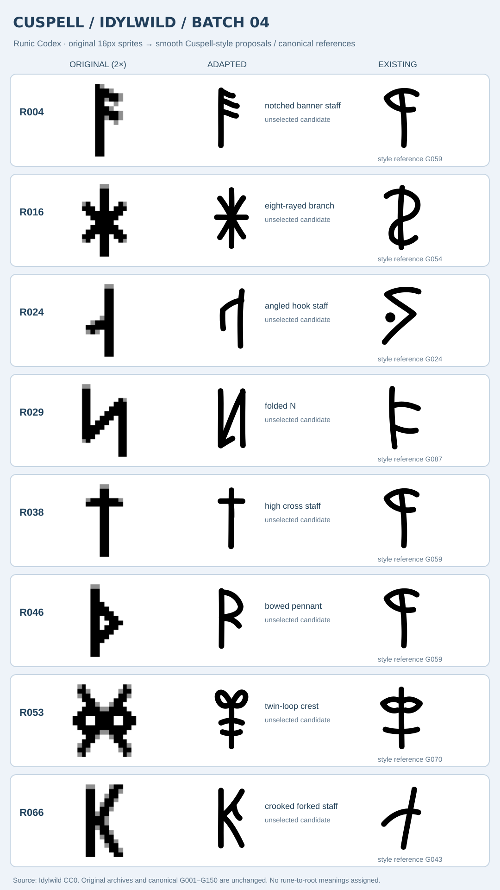
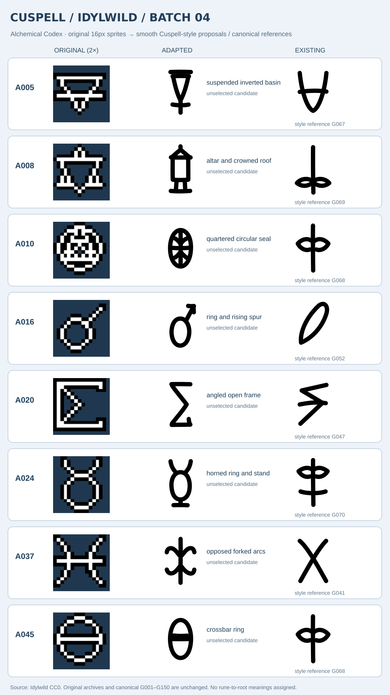

Real Idylwild source pixels are compared with the new smooth Cuspell-style SVGs and genuine existing Cuspell glyphs. References are only for visual consistency; no source meanings are assigned, and no candidates adopted.
Runic Codex — 8 candidates

Alchemical Codex — 8 candidates

Original source archives kept intact. See manifest.json for provenance and review status.